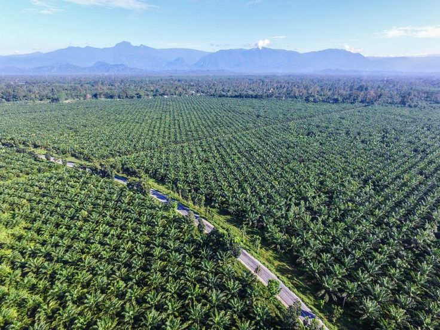
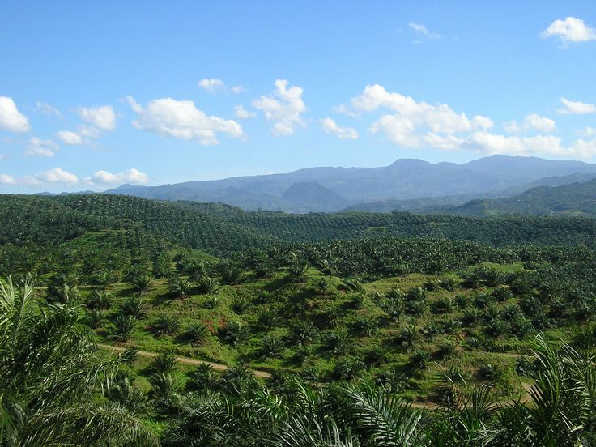
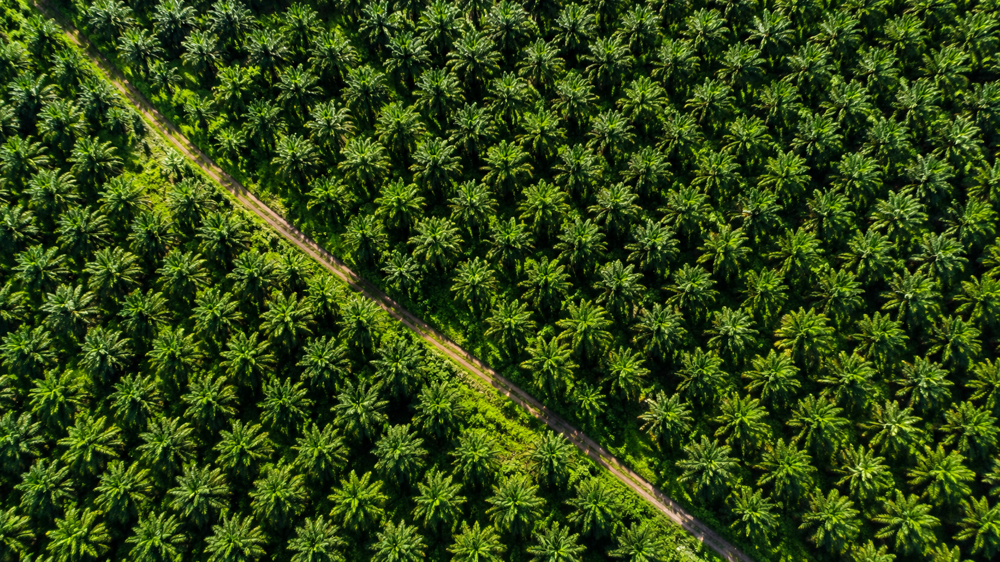

Gallery

Project Documentation


WebGIS untuk menampilkan persebaran perkebunan kelapa sawit di Indonesia menggunakan QGIS, OpenLayers dan JavaScript.

PalmScope merupakan platform WebGIS yang dibuat sebagai portfolio untuk menampilkan persebaran perkebunan kelapa sawit di Indonesia secara interaktif.
Visualisasi data spasial yang mudah dipahami.
Data berasal dari hasil pemetaan menggunakan QGIS.
Dapat diakses melalui desktop maupun mobile.
Province
Plantation Area
Total Area
Latest Update
Klik polygon pada peta untuk melihat informasi mengenai persebaran perkebunan kelapa sawit di Indonesia.


Email : gayuhraiiguna@gmail.com
Github : github.com/raiga7740